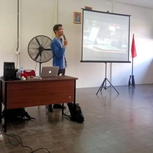
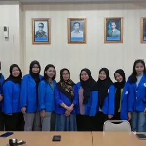
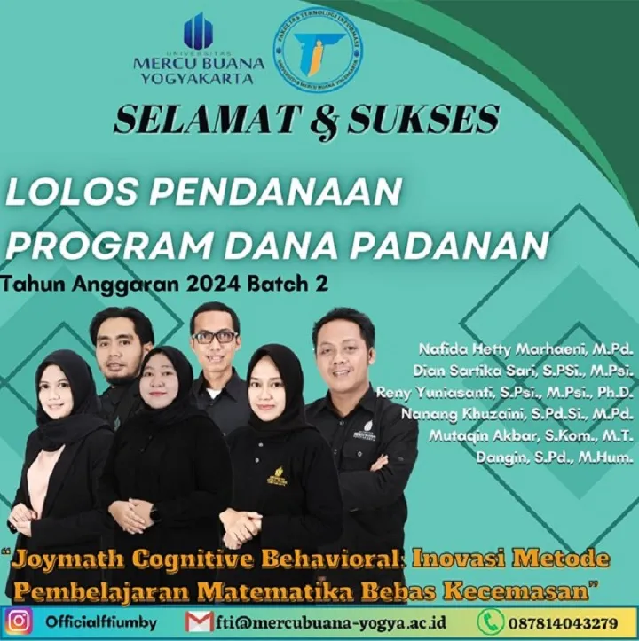
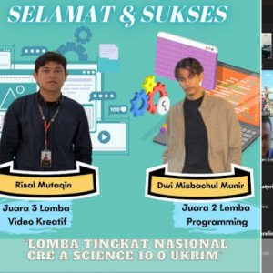
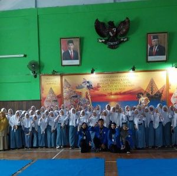

Berita Terkini

Mahasiswa FTI Raih Juara Nasional Kompetisi Inovasi Teknologi
Tim mahasiswa FTI UMBY berhasil memenangkan kompetisi inovasi teknologi tingkat nasional dengan karya revolusioner di bidang kecerdasan buatan.
Baca SelengkapnyaArsip Berita

Workshop Keamanan Siber Bersama Pakar Industri
FTI UMBY menggelar workshop intensif tentang keamanan siber dengan menghadirkan praktisi terkemuka dari industri teknologi informasi.

Penandatanganan Kerja Sama dengan Perusahaan Teknologi
Fakultas menjalin kerja sama strategis dengan beberapa perusahaan teknologi terkemuka untuk program magang dan penelitian bersama.

Seminar Nasional Teknologi Informasi 2025
Acara tahunan yang membahas perkembangan terkini dalam bidang teknologi informasi dan dampaknya pada berbagai sektor.

Mahasiswa FTI Kembangkan Aplikasi Kesehatan Inovatif
Tim mahasiswa merancang aplikasi mobile untuk monitoring kesehatan menggunakan teknologi AI dan machine learning.